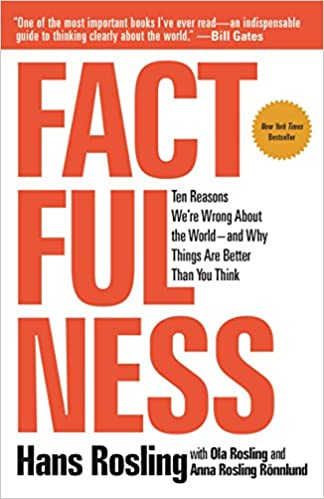

Factfulness, by Rosling
Wednesday August 5, 2020
Factfulness finds Rosling realizing that facts are not enough, because thinking is polluted by "dramatic instincts," so his presentation of little-known optimistic trends is organized to address not just ignorance, but systematic biases in how people think.
- The Gap Instinct: Giving its name to his foundation, this is the tendency to think groups are completely different. Usually even if group averages are different, the distributions significantly overlap.
- The Negativity Instinct: Bad news is reported and feels salient, even if trends are positive overall.
- The Straight Line Instinct: Trends are not always linear, but it's easiest to extrapolate as if they were—and be wrong.
- The Fear Instinct: Fear is often not calibrated to true risk.
- The Size Instinct: Understanding "big" requires appropriate comparison.
- The Generalization Instinct: Both categories and anecdotes can be misleading.
- The Destiny Instinct: Slow change is not the same as no change.
- The Single Perspective Instinct: Understanding requires more than one approach, view, or tool (even statistics).
- The Blame Instinct: Whether effects are good or bad, the reasons are probably more complex than just one individual or organization.
- The Urgency Instinct: It's better to think and act carefully than jump into drastic moves.
Rosling wants us to realize our shared humanity, see that things have mostly gotten better over long time scales, and work to keep improving things. The philanthropy of Bill Gates is largely working to continue the trends Rosling focuses on, for example.
Like his classic presentation, celebrated by data visualizers, the book is a study in good communication. I particularly noticed that he often found opportunities to present dialogue rather than just narrative, and that he used cute attention-getting flourishes like using hypothetical "chimps" to stand in for random performance on his quizzes.
I agree there's risk in assuming positive trends inevitably continue. But it isn't fair to say Rosling ignored future risks. He listed five things that he thought we should worry about:
- Global pandemic
- Financial collapse
- World War III
- Climate change
- Extreme poverty
Writing in 2017, he seems particularly prescient today.

"... free access to data doesn't turn into knowledge without effort." (page 79)
"It will be helpful to you if you always assume your categories are misleading." (page 158)